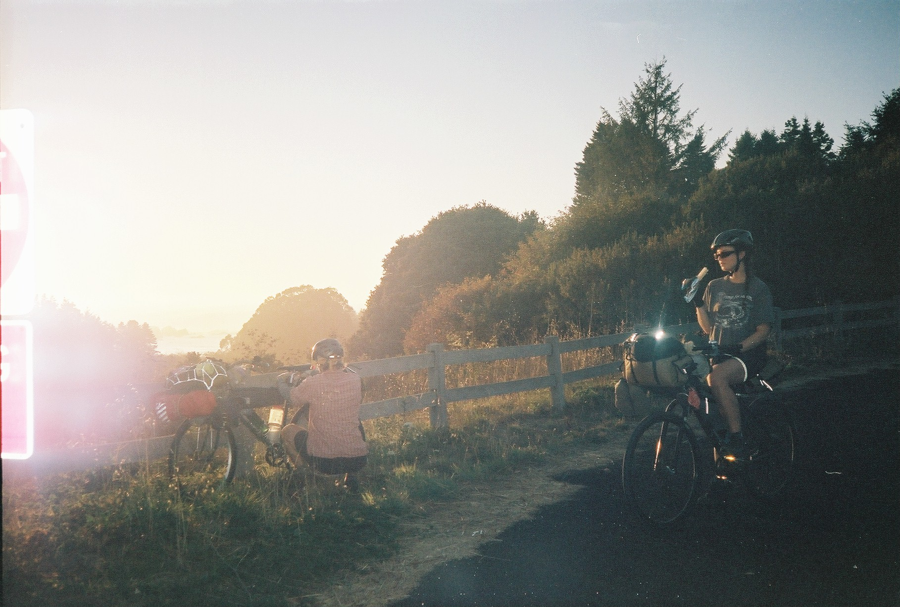

September 2025
Japans Southern Coast
Our first truly international trip, starting with unpacking our boxes in Fukuoka, following a six day course we had planned across Shikoku, and leaving the rest to negotiate as we go
3 weeks
coastal roads, small fishing villages, climbing active volcanoes

September 2024
The West Coast
Following Highway 1 along the coast of North America, across Washington, Oregon and down through Northern California
3 weeks
highway 1, coastal communities, redwood trees, pacific ocean
